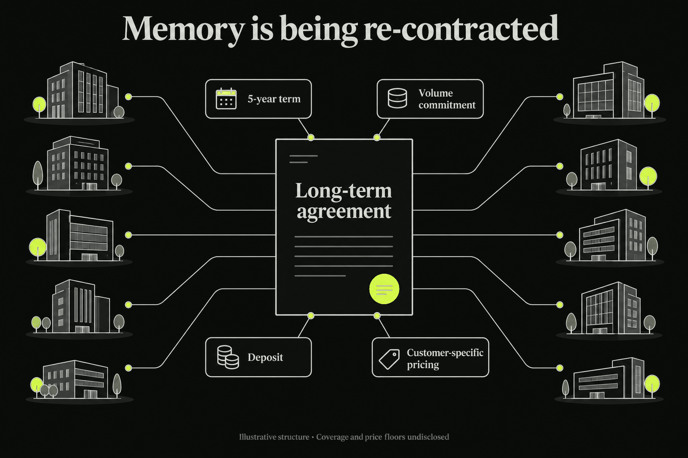
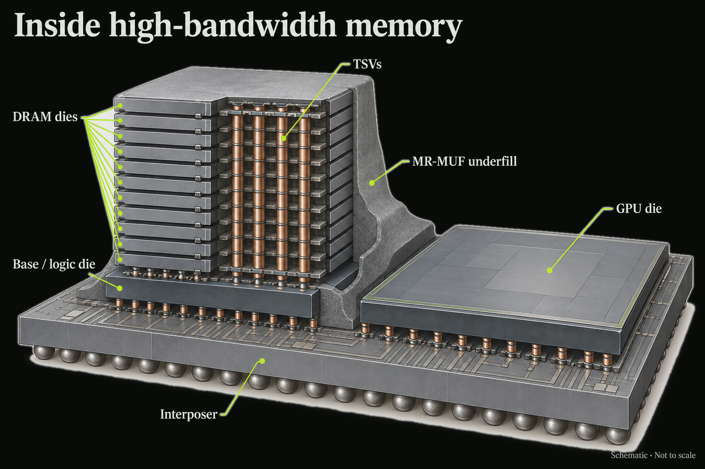
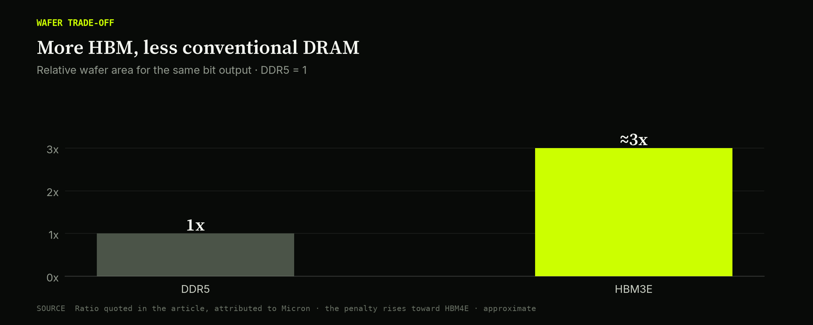
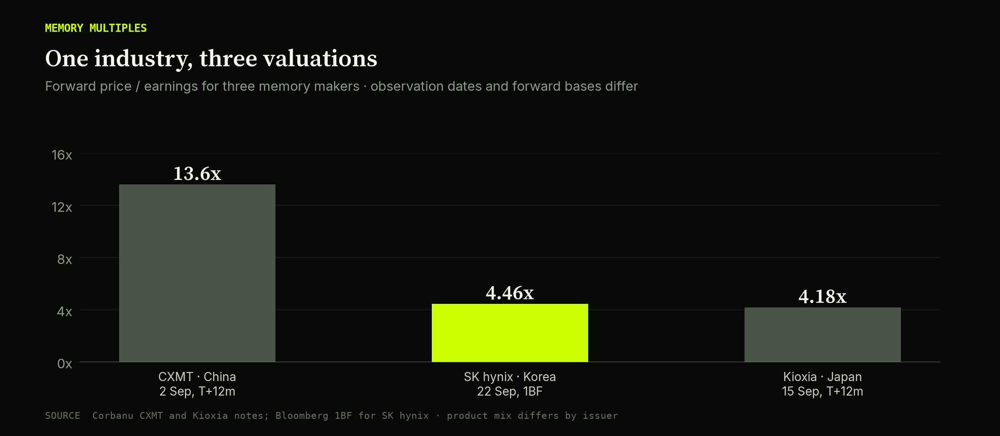
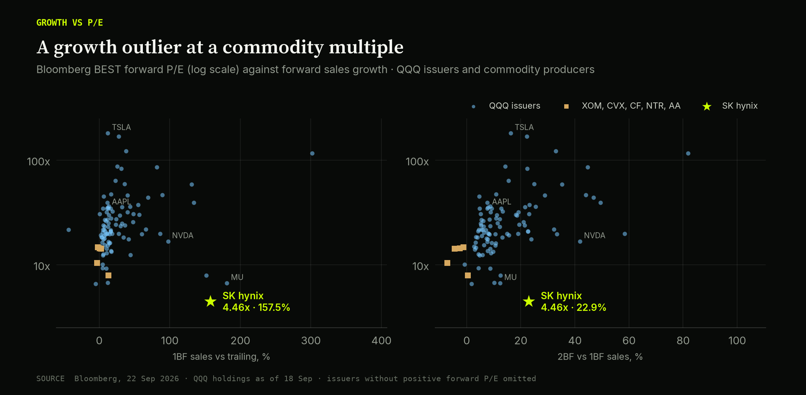
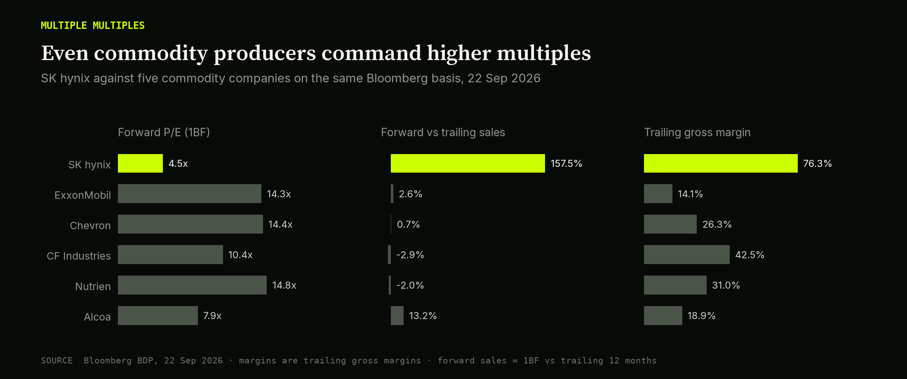
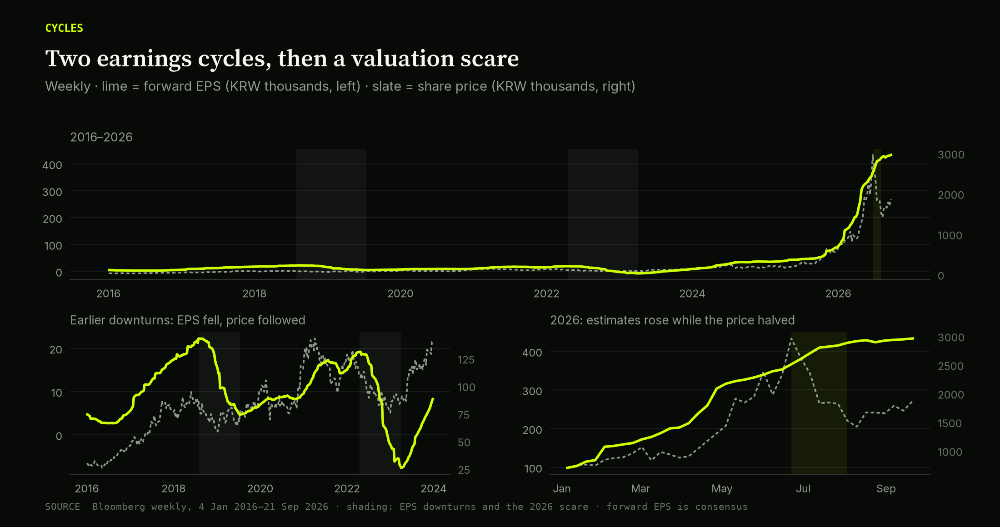
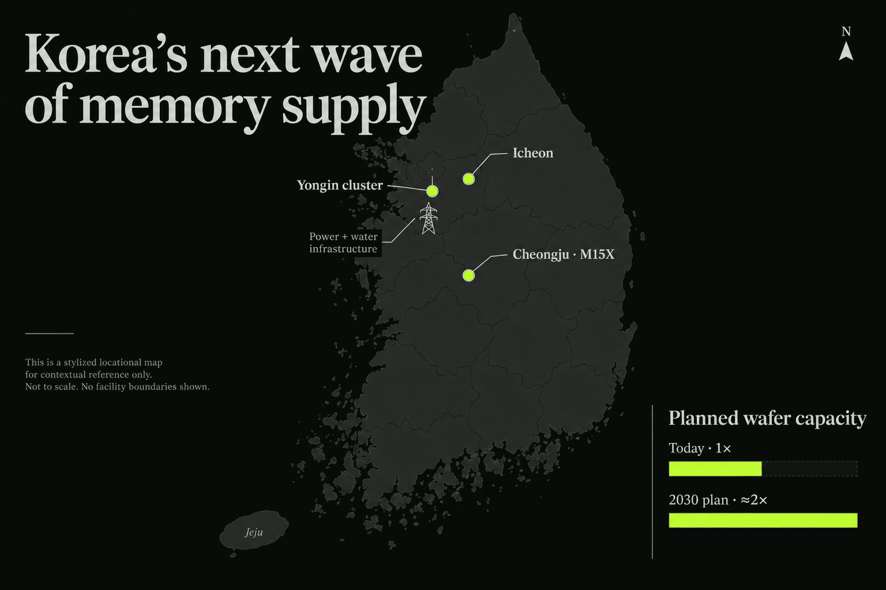
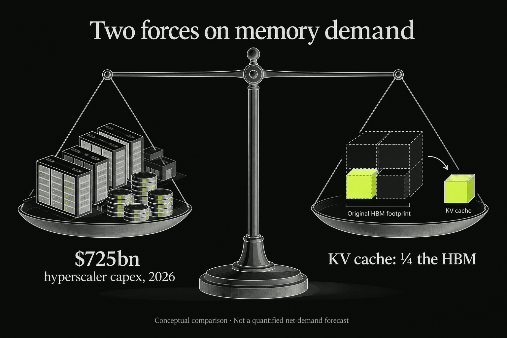
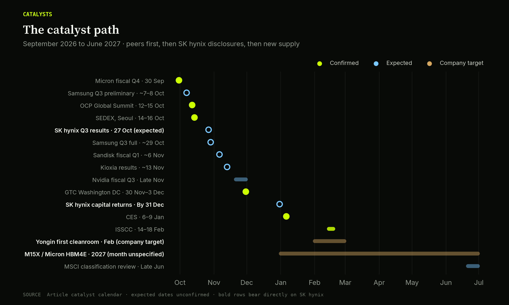

SK Hynix: The road from Recontracting to Repricing
CORBANU · TRADE NOTE · 27 SEPTEMBER 2026
27 September 2026 • Long SK hynix • 12-month horizon, to 27 September 2027
The trade
On 10 July, the day SK hynix listed its shares in New York, chief executive Kwak Noh-jung told Reuters: "We forecast that next year will be the worst year in the industry's history from the supply perspective." He went further: "We still forecast that customer demand will remain higher than our supply capacity even beyond 2030." Reuters via MarketScreener
Three weeks later the stock was down more than half from its June high.
Corbanu is going long SK hynix. This is our third memory thesis in three weeks. In our CXMT long and our Kioxia/Nikkei pair, we argued that memory is being re-contracted: sold on multi-year, deposit-backed agreements instead of quarterly spot. The shift is most concrete at SK hynix, which has signed roughly ten long-term agreements, typically for five years, with deposits attached. We think that visibility warrants a higher earnings multiple than spot sales.
We enter at 4.30× Bloomberg forward earnings, about 38% below the June high. Our base case pays 8× on earnings cut 10%: +68% on the ordinary share. That return requires neither a software multiple nor further earnings upgrades.
Hynix trades at a lower earnings multiple than the oil, fertilizer and aluminum producers in our comparison. ExxonMobil, Chevron, CF Industries, Nutrien and Alcoa average 12.35× forward earnings on 2.3% forward revenue growth and 26.6% trailing gross margins. Hynix, at our entry: 4.30×, 157.5% growth, 76.3% margins. It also trades at a third of CXMT's multiple, China's state-backed memory champion, which makes the same product. Bloomberg comparison
Samsung trades near 4.4× and Micron at 6.7×, so part of hynix's discount is shared by Korean memory companies. It is not all specific to hynix. Past memory cycles also ended with forward earnings down 79% or negative. Our target depends on contracts making earnings more durable through a downturn, and on investors recognizing that change.
| Decision point | Investment case |
|---|---|
| Entry | xyz:SKHX perpetual mark $1,367.50 at 21:27 UTC 2026-09-27 (live); KRW1,862,000 last ordinary-share close, 2026-09-23, used to convert KRW targets into returns |
| Sizing | 1.33% of capital, unlevered (1× notional); vol-weighted with a 5.0% Apple short and a 2.52% Oracle long |
| Base, 45% house probability | 90% of current forward EPS × 8× → KRW3.119m; +67.5% |
| Bull / bear / tail | +155.9% / −42.4% / −89.5% equity returns; 20% / 25% / 10% probabilities |
| Expected return | +42.0% equity price return; +26.3% perpetual return if recent 30-day annualized funding cost persists |
| What breaks it | Contract failures, collapsing earnings, competitive margin erosion, or punitive perpetual funding |
A note on multiples across our posts. Our CXMT note put hynix at 3.8× next-twelve-month and 4.7× first-fiscal-year earnings on 2 September; our Kioxia note put it at 3.62× second-fiscal-year earnings on 15 September. This note enters at 4.30× Bloomberg 1BF (blended forward) on the 2026-09-23 Seoul close; the 22 September capture was 4.46×. These are different points on a steeply rising earnings curve, not a contradiction: later-year earnings are larger, so their multiples are lower. The 4.46× 1BF and 4.7× FY1E figures describe the same near-term earnings.
The Meaning of Recontracting
Memory has historically traded much like wheat: buyers ordered a quarter ahead, prices cleared on spot and contract markets, and shortages ended in gluts. The new agreements extend that buying horizon.
At Sandisk's 13 August Investor Day, CEO David Goeckeler said: "Within 2 quarters, we've gone from 3 months of visibility to over 4 years of visibility." Micron calls its version "strategic customer agreements": by its fiscal third quarter it had signed 16, and projected $22bn of cash deposits and related financial commitments. CEO Sanjay Mehrotra said the agreements "will significantly enhance the durability and predictability" of Micron's results. Sandisk Investor Day · Micron IR
SK hynix confirmed its version in its Q2 results. It reported KRW79.32tn revenue, up 257% year on year, KRW60.54tn operating profit (a 76% operating margin), and the start of HBM4 mass shipments. It has completed long-term agreements (LTAs) with around ten customers. On the call, management described them:
"LTAs are designed to be specific to each customer and product, typically with a five-year term. Pricing structures vary to address price volatility and enhance long-term business stability. The agreements include mechanisms like deposits to strengthen contract implementation and demand visibility, allowing us to optimize investment and production planning."
And on the fear that every memory expansion ends in oversupply: "The capacity expansion is aligned with confirmed customer demand, and we do not believe it will lead to oversupply." Issuer release · Call highlights · Captured call evidence

The re-contracting of memory: about ten customers, five-year terms, deposits down.
Apple's Tim Cook, on his final earnings call on 30 July, described a "100-year flood" in memory pricing. Amazon's Andy Jassy raised 2026 capex to about $220bn the same day and said even that "will still not have enough capacity to meet all the demand," adding the dynamic will "also be true in 2027 too." For buyers facing a memory shortage, a five-year supply commitment is a way to protect access. Fortune on Cook
Commitments and deposits can support utilization when demand softens. That makes future cash less uncertain and can justify a higher multiple even if earnings estimates fall.
But committed demand is not guaranteed profit. Management has not disclosed revenue coverage, deposit amounts, cancellation penalties or minimum prices. Some volume is more visible; future earnings are not locked. A price cap can limit upside while preserving a floor. We do not rely on unconfirmed reports that all contracts are uncapped. Micron has published a deposit figure; SK hynix has not. We want SK hynix to disclose the same detail.
The cash may also reach shareholders. CFO Kim Woo-hyun said the company intends to communicate additional shareholder-return plans "within the year once they have been finalized"; form, size and timing are unspecified. SK Group's chairman, Chey Tae-won, bought SK hynix shares directly for the first time on 30 July, the day the stock bottomed: 3,620 shares, about KRW4.79bn. Two weeks earlier, at the Jeju Forum, he had told investors that memory chips "will continue to be needed, so the stock price will rise over time." A concrete capital-return policy is a catalyst to watch, not an announced buyback. Korea Herald · Management evidence
Hynix's Specialization
High-bandwidth memory (HBM) is DRAM built upward. Eight, twelve and now sixteen DRAM dies are stacked on a logic base die and wired together through thousands of vertical through-silicon vias (TSVs). The stack sits on a silicon interposer next to the GPU, feeding it data faster than any board-level memory could. SK hynix bonds its stacks with a process called MR-MUF (mass reflow molded underfill), which it credits for its yield and heat advantage; Samsung and Micron use a different film-based method. With HBM4, the base die becomes customizable for each accelerator, tying supplier and customer together more tightly.

How HBM works: a stack of DRAM dies wired by through-silicon vias onto a logic die — the part that gates every AI accelerator.
HBM’s much greater wafer requirement per bit is also why the whole DRAM market is short. Micron's Sumit Sadana has said that producing 100 bits of HBM3E means giving up about 300 bits of conventional DRAM supply, a ratio that worsens with each generation. At Hot Chips in August, Micron's HBM design fellow Raghu Sreeramaneni said the penalty is "definitely not getting better." Every HBM wafer start tightens the supply of the DDR5 in servers and the LPDDR in phones. Our CXMT note

Why the shortage is structural: every HBM bit crowds out roughly three bits of conventional DRAM.
SK hynix leads the HBM market. IDC data in SK hynix's US listing documents put its HBM revenue share at 56.4% in Q1 2026, while it ranked second in DRAM overall at 29.1%. TrendForce estimates SK hynix will supply 60–70% of the HBM4 for Nvidia's Vera Rubin platform. Nvidia's Jensen Huang confirmed in June that all three suppliers had passed HBM4 qualification for Rubin, so the lead is real but contested.
Our Cerebras short argued that HBM-based inference chips beat Cerebras's SRAM wafer; OpenAI's Jalapeño carries 216 GB of HBM4. The supplier still matters: Jalapeño's HBM4 is reported to come from Samsung, whose HBM4 yields have reportedly recovered to around 80%. Broader HBM adoption supports demand; hynix still has to win accelerator designs.
SK hynix is also exposed to our Kioxia thesis. Through its own NAND business and Solidigm, it sells the enterprise SSDs that hold AI context. In Q2, its enterprise SSD revenue roughly doubled from the prior quarter, and Solidigm's 30TB-plus SSD revenue more than tripled.
Multiple Multiples
Memory is now treated as strategic national infrastructure in Seoul, Beijing and Tokyo. The market prices the three national champions very differently:
| Company | Home market | Forward P/E | Who sets the price |
|---|---|---|---|
| CXMT | Shanghai STAR board | 13.6× (2 Sep, T+12m) | Domestic capital, state shareholders, 6.6% free float |
| SK hynix | Seoul (and New York ADR since July) | 4.46× (22 Sep, 1BF) | Global investors applying a cycle and governance discount |
| Kioxia | Tokyo | 4.18× (15 Sep, T+12m) | Global investors applying a cycle discount |
Sources: our CXMT and Kioxia notes and the Bloomberg capture for this note. Bases differ slightly; the gap does not depend on them.

One product, three price tags: the market pays up for a state champion and discounts the technology leader.
CXMT is a generation behind in HBM and has a fraction of hynix's revenue, yet trades at three times the multiple. We attribute the valuation gap to ownership and investor expectations rather than product quality: buyers in Shanghai value a strategic asset, while global investors price Seoul's memory industry for the cycle. Korea's own reforms, covered below, are an attempt to change how Seoul prices its champions.
Faster growth, fatter margins, lower multiple
Every figure uses Bloomberg 1BF blended forward P/E. We show two growth measures: (1) next-twelve-month consensus sales against reported trailing sales, and (2) the following blended forward year against the first. The triple-digit figure refers to measure 1; on measure 2, hynix grows 22.9%. Margins are gross, not operating.
| Comparison group | Mean / median 1BF P/E | Mean sales growth: 1BF / trailing | Mean sales growth: 2BF / 1BF | Mean trailing gross margin |
|---|---|---|---|---|
| SK hynix | 4.46× | 157.5% | 22.9% | 76.3% |
| QQQ all issuers | 31.6× / 22.5× (96/100) | 37.4% (100/100) | 16.5% (100/100) | 57.5% (96/100) |
| QQQ Information Technology | 37.8× / 26.4× (40/42) | 64.3% (42/42) | 24.6% (42/42) | 65.6% (42/42) |
| Five commodity producers | 12.4× / 14.3× (5/5) | 2.3% (5/5) | -2.9% (5/5) | 26.6% (5/5) |
Means are equal-weight company averages; parentheses show available observations / companies. They are not the QQQ fund's aggregate P/E. The supplied holdings cover 101 share classes and 100 issuers, with Alphabet's classes combined. Four companies without a positive forward P/E stay in the growth calculations but cannot appear on the chart's log axis; no high multiple is removed or capped. Full list, allocations, all 42 Bloomberg-classified technology holdings and missing observations are in the appendix.

Logarithmic P/E axis; every positive-P/E observation is shown. Hynix is a low-multiple outlier on both growth horizons, though not the fastest grower in the sample.
The largest QQQ holdings
Top 15 issuers by 18 September allocation (Alphabet's classes combined), plus hynix:
| Company | BEST P/E (1BF) | Sales: 1BF / trailing | Sales: 2BF / 1BF | Gross margin, trailing | Gross margin, 1BF |
|---|---|---|---|---|---|
| SK hynix (000660) | 4.5× | 157.5% | 22.9% | 76.3% | 84.3% |
| NVIDIA Corp (NVDA) | 16.8× | 97.6% | 41.9% | 74.7% | 73.1% |
| Apple Inc (AAPL) | 35.3× | 12.2% | 7.9% | 48.7% | 47.5% |
| Alphabet Inc Class A (GOOGL) | 21.0× | 16.2% | 22.7% | 60.9% | 67.5% |
| Microsoft Corp (MSFT) | 24.3× | 23.4% | 19.4% | 67.9% | 65.9% |
| Micron Technology Inc (MU) | 6.7× | 181.0% | 12.4% | 72.6% | 85.9% |
| Amazon.com Inc (AMZN) | 19.9× | 18.1% | 14.9% | 50.8% | 52.6% |
| Advanced Micro Devices Inc (AMD) | 46.5× | 89.7% | 44.0% | 53.2% | 55.6% |
| Meta Platforms Inc (META) | 19.8× | 27.7% | 19.0% | 81.7% | 79.6% |
| Tesla Inc (TSLA) | 181.6× | 12.2% | 16.3% | 18.9% | 19.1% |
| Broadcom Inc (AVGO) | 19.8× | 86.6% | 58.5% | 68.8% | 72.1% |
| Intel Corp (INTC) | 63.5× | 23.2% | 15.5% | 38.6% | 43.4% |
| Walmart Inc (WMT) | 34.6× | 5.2% | 4.8% | 25.2% | 24.6% |
| Cisco Systems Inc (CSCO) | 21.6× | 16.5% | 7.2% | 64.5% | 64.8% |
| Palantir Technologies Inc (PLTR) | 85.7× | 81.5% | 44.7% | 84.8% | 86.3% |
| Costco Wholesale Corp (COST) | 39.4× | 11.8% | 7.6% | 12.9% | 11.4% |
Micron is the closest comparator, and hynix is a third cheaper. Micron has higher first-year growth and a similar forward gross margin. Hynix trades roughly 33% below it and grows faster the following year: 22.9% versus 12.4%. Nvidia and AMD have different moats and capital needs. Their multiples mark the opportunity cost of capital, not a target for a memory maker.
Even ordinary commodity producers cost more
| Company | BEST P/E (1BF) | Sales: 1BF / trailing | Sales: 2BF / 1BF | Gross margin, trailing | Gross margin, 1BF |
|---|---|---|---|---|---|
| SK hynix (000660) | 4.5× | 157.5% | 22.9% | 76.3% | 84.3% |
| ExxonMobil (XOM) | 14.3× | 2.6% | -4.4% | 14.1% | n/a |
| Chevron (CVX) | 14.4× | 0.7% | -2.5% | 26.3% | n/a |
| CF Industries (CF) | 10.4× | -2.9% | -7.1% | 42.5% | 40.9% |
| Nutrien (NTR) | 14.8× | -2.0% | -1.1% | 31.0% | 31.2% |
| Alcoa (AA) | 7.9× | 13.2% | 0.5% | 18.9% | 18.8% |

We picked the basket before pulling any data, to represent oil, fertilizer and aluminum. Its mean P/E is 12.35×, about 2.8 times hynix's, for following-year sales growth averaging −2.9%. The cheapest, Alcoa, still trades at 7.9× on 18.9% trailing gross margins. (Bloomberg returns no forward gross-margin estimate for ExxonMobil or Chevron.)
These industries have different capital needs. Even so, we think the 64% discount to other cyclicals requires a much worse earnings collapse in memory to justify it. Cyclicality alone does not explain the gap.
Summer of Pessimism as Bear Case
The June and July sell-off preceded any fall in earnings.
SK hynix hit an intraday record of KRW2,987,000 on 25 June. On 2 July a US chip rout knocked Korean memory down about 9% at the open. On 10 July hynix raised about $26.5bn in the largest US listing ever by a foreign company, at $149 per ADR, and the Seoul shares fell 15.4% the next trading session as money rotated toward the New York line. On its late-July results, record numbers still missed the whisper, and the stock fell 9.6%. It bottomed near KRW1,322,000 on 30 July, roughly 56% below the June high. (Our CXMT note recorded the fall as 54% on its own basis.) Kioxia fell 64.7% from 22 June to 29 July; Samsung fell more than 30% from its June high; Micron dropped from $1,255 to below $740.
Through all of it, forward estimates held or rose. This was a de-rating, not an earnings downgrade. Our entry at KRW1,862,000 is about 41% above the July low and 38% below the June high.

The tell of summer 2026: price fell by more than half while forward estimates rose.
Retail money made the swing bigger. The Roundhill Memory ETF (DRAM), the first memory-only ETF, launched on 2 April, raised more than $5bn within weeks and counts SK hynix as its largest holding. Korean regulators moved to limit retail access to leveraged ETFs after the summer volatility. A sustained 8× valuation will need patient holders while momentum investors are still trading out. Roundhill · CNBC
This summer’s price scare differs from earlier downturns, when forward earnings fell sharply:
| Cycle | Peak forward EPS / date | Forward P/E at that point | Subsequent trough forward EPS / date | EPS change |
|---|---|---|---|---|
| 2018–19 | KRW22,272 / 2018-07-30 | 3.86× | KRW4,672 / 2019-07-15 | -79% |
| 2021–23 | KRW19,206 / 2022-04-18 | 5.67× | KRW-7,630 / 2023-04-03 | -140% |
Peaks are the maximum weekly forward EPS in 2018 and in January 2021–June 2022; the trough windows end June 2020 and January 2024. These are Bloomberg estimate changes, not share-price drawdowns. Historical series · Calculations
Buying at 3.9–5.7× peak earnings offered little protection in those downturns. In 2019 the P/E rose to 16.3× at the trough because earnings shrank. In 2023 EPS went negative and the P/E ceased to mean anything. We expect deposits and multi-year procurement to make earnings more durable. Without that change, the old cycle can repeat.
Our tail case keeps just 15% of current forward earnings, a deeper cut than 2018–19, and implies roughly 90% equity downside. A return to losses sits outside any positive-P/E framework and could wipe out most of the capital invested.
The main risk to the thesis is supply catching up with demand. Micron's Q3 release confirms high-volume HBM4 shipments and plans HBM4E volume production in 2027. Samsung has cleared Nvidia's HBM4 qualification. SK hynix itself is building aggressively. It has committed about KRW21.6tn to its first fab at the Yongin mega-cluster, with the first cleanroom brought forward to February 2027, and is pulling its M15X fab in Cheongju into production in 2027. The company targets roughly doubling wafer capacity by 2030. On 21 September the Federation of Korean Industries warned that Yongin's roads, water and power still lag the schedule. Those infrastructure gaps could delay supply and support prices. Micron product roadmap · Hynix capacity plans · Seoul Economic Daily on Yongin

Where the next wave of supply comes from — and the power it needs.
That is why we stress lower realized prices rather than extrapolating today's shortage. Competitor qualification and new supply push the model toward its −30% bear-price or −60% severe-price cases, which are our stresses, not company guidance.
Demand versus efficiency
Customers sign five-year contracts because they expect to need the memory. The four largest US hyperscalers have guided to about $725bn of 2026 capex, up 77% on 2025's record, and analysts project more than $1tn in 2027. Agents and inference workloads keep growing their working context, and that context lives in HBM, DRAM and SSD. AI capex tracker
The counterargument arrived on 10 September. DeepSeek's V4.1-Flash paper claims the model's HBM-resident KV cache is roughly one-quarter the size of its predecessor's, and its SSD-resident cache roughly one-eighth. Mixture-of-experts designs and 4-bit quantization push the same way: less memory per task. NeoTeo on DeepSeek V4.1 Flash
SK hynix's answer, on its call, was that efficiency means higher utilization of existing AI infrastructure and faster monetization, which in turn expands demand for HBM, server DRAM and high-performance NAND. That is the Jevons argument: cheaper inference leads to more inference. We think it is right over the contract horizon, but it is not guaranteed. A step change in efficiency arriving at the same time as new supply is the combination that would push us toward the bear case. Contracts with deposits soften that blow; they do not prevent customers from asking to renegotiate.

The two forces on memory demand: a capex flood against a compression breakthrough.
The CXMT question
We are long CXMT, the fourth supplier memory buyers say they want, as well as the incumbent it is trying to catch.
For now, the two companies sell into different markets. CXMT feeds captive Chinese demand: Huawei's Ascend accelerators, Cambricon and Alibaba's T-Head, which US export controls cut off from Korean HBM. It reached HBM3E risk production this summer using older DUV lithography tools only. SemiAnalysis estimates its HBM3 yields at around 25% and its cost per bit more than 30% above the incumbents'. SK hynix is already in HBM4 mass production for Nvidia and the hyperscalers. CXMT's HBM mostly replaces stockpiled foreign HBM inside China; it does not yet compete for Nvidia sockets. Tech Times on CXMT HBM3E · SemiAnalysis
The companies overlap in commodity DRAM, where CXMT already ships DDR5 and LPDDR at prices at or above the incumbents'. An inflection in CXMT's HBM yields would be a reason to reduce our hynix position.
Alongside our CXMT long and the proposed Kioxia/Nikkei pair, this note makes the tracker portfolio long three memory makers. All three positions depend on an AI memory shortage. An efficiency shock or a demand air pocket would hit all three together. The CXMT leg adds China policy and STAR-board liquidity risk; the Korean and Japanese legs add currency.
The Rerating Two-Step
Closing the Korean-memory discount would take hynix from 4.30× to Micron's 6.7×. A further move from 6.7× to 8× requires another 19% on the multiple, which we think greater earnings persistence could justify. Both steps remain uncertain. Samsung at 4.40× shows the market is discounting strong earnings across both Korean leaders. Same-override supplementary capture
Seoul’s governance reforms aim to narrow the Korean discount. The "Korea discount" has long been blamed on chaebol governance (founding families controlling groups through holding-company chains), low payouts and geopolitical risk. SK hynix sits at the end of such a chain: Chairman Chey Tae-won controls SK Inc., which controls SK Square, which owns about 20% of SK hynix. SK Square itself trades at roughly a 40% discount to the value of that stake. Under President Lee Jae-myung, elected in June 2025, the government has:
- amended the Commercial Act so that directors owe a fiduciary duty to all shareholders, not only the controlling family;
- cut the top tax rate on dividends from 45% to a 14–30% range (December 2025);
- required high-dividend companies to publish Value-Up plans to keep their tax benefits (February 2026);
- moved to curb split-off listings that dilute minority shareholders.
The KOSPI crossed 5,000 in January, Lee's campaign target, and closed above 7,000 on 21 September. But in June, MSCI kept Korea in Emerging Markets and did not add it to the watchlist for developed-market status, pushing any upgrade past 2027.
Korea's K-Chips Act raised the tax credit for chip facility investment to 20% for large companies from April 2025, and the state is financing power and water for Yongin. US policy adds pressure to invest there. A 25% US tariff on semiconductors took effect in January 2026; Korea negotiated treatment no worse than its competitors, and memory was excluded from the first phase. Commerce Secretary Howard Lutnick has warned rates could reach 100% for companies that do not invest in the US. SK hynix's roughly $3.87bn HBM packaging plant in West Lafayette, Indiana, targeted for 2028, is its hedge. Its China fabs in Wuxi and Dalian operate under annually renewed US equipment authorizations, which effectively freezes their technology. SoftwareSeni on export controls
HBM execution, fulfilled contracts and cash distributions could change what investors will pay. Geographic and governance risks could keep the discount in place.
Since 2016, hynix's positive-forward-EPS history has a 7.17× median; 8× sits around the 56th percentile and 10× around the 72nd. Those figures include low-earnings periods and are not normalized fair values. The multiples have been reached before, but the earlier cycles show how falling earnings can erase that apparent value.
Against the KOSPI, hynix is not unusually cheap. The 21 September snapshot put it at 0.78× the index forward P/E, versus a 0.70× historical median. So this is a bet on changed earnings durability, not a snap-back to the old domestic-index relationship. Historical comparison
Cash generation, after capex
Bloomberg 1BF consensus, KRW trillion:
| Revenue | Gross profit, derived | EBIT | Net income | D&A, EBITDA less EBIT | Capex outflow | Free cash flow |
|---|---|---|---|---|---|---|
| 487.2 | 410.7 | 382.1 | 316.7 | 16.0 | 57.2 | 249.2 |
At KRW1,862,000 and 730.49m shares, equity value is about KRW1,360tn. Free cash flow of KRW249.2tn, after KRW57.2tn of capex, is an 18.3% forward FCF yield. That is a low valuation on free cash flow as well as earnings. Bloomberg fields
The consensus lines are aggregated independently and don't fully reconcile. Net income plus implied D&A less capex needs another −KRW26.3tn to reach FCF. We carry that as an unallocated working-capital/other residual. We do not label it a tax or working-capital forecast, and we do not strip pretax investment gains out of reported net income.
We test the EPS haircuts against changes in company-wide prices and volumes. Start from KRW487.2tn sales, KRW76.4tn cost of sales and KRW28.6tn implied operating expenses. Scale cost of sales with volume at constant unit cost, vary opex as shown, and convert positive EBIT to net income at the consensus 82.9% ratio. Hold capex, D&A and the cash-flow residual constant:
| House stress | Volume | Realized price | Opex | Revenue, KRWtn | Earnings retained | FCF proxy, KRWtn |
|---|---|---|---|---|---|---|
| Base stress | +10% | -15% | +10% | 455.5 | 89% | 214.2 |
| Bear stress | -5% | -30% | +0% | 324.0 | 58% | 117.1 |
| Severe stress | -20% | -60% | +0% | 155.9 | 17% | -12.7 |
The stresses back up the scenario haircuts. Base retains 89% of earnings (scenario: 90%). Bear retains 58% (scenario: 55%). Severe retains 17% (tail: 15%) and turns cash flow negative if capex holds. These are aggregate price/volume stresses, not HBM segment forecasts or assumed contract coverage. Fixed manufacturing costs, product mix, dilution and tax could make every row worse. Full model
The cash-flow assumptions help explain our 8× target and why we do not use 20×. Consensus converts about 79% of net income to free cash. Capitalize a stable cash stream at a 12% required equity return less 2% growth and you get roughly 7.9× earnings. At 15% and no growth: 5.2×. At 60% conversion and a ten-point return-less-growth spread: 6×. These are house assumptions: five-year contracts do not prove the indefinite cash persistence this steady-state check assumes.
How much contract protection is enough?
Run the model backward from the base target. With volume +10%, opex +10% and constant unit costs, keeping 90% of baseline earnings requires weighted realized prices to hold 85.7% of the forward baseline. The harder unprotected prices fall, the more revenue needs protecting:
| Unprotected price decline | Required baseline revenue share with protected prices flat | Required share with protected prices down 10% |
|---|---|---|
| −30% | 52.5% | 78.7% |
| −50% | 71.5% | 89.3% |
| −60% | 76.2% | 91.5% |
In the first row, if unprotected prices fall 30%, about 52.5% of baseline revenue must hold its price, or 78.7% if protected prices also slip 10%. Revenue is weighted at baseline prices, with common volume growth. We do not claim hynix has that coverage, that deposits imply a price floor, or that today's forecast prices are contractual strikes. Reproducible inverse stress
The 85.7% price threshold gives us a test for the Q3 and Q4 disclosures. Weak contract protection can still work if tight supply holds prices near that level. If neither contracts nor market conditions do so, our base EPS is too high. We need evidence on prices, volumes, deposits and cash; the number of signed agreements alone cannot establish that protection.
Priced-In Disappointment
Captured 1BF EPS is KRW433,181; 2BF is KRW511,045. Our base uses KRW389,863, about 24% below following-year consensus. Return = exit forward EPS × exit P/E ÷ entry price − 1:
| Earnings retained versus today’s 1BF consensus | 4.5× | 6× | 8× | 10× |
|---|---|---|---|---|
| 100% | +4.7% | +39.6% | +86.1% | +132.6% |
| 90% | -5.8% | +25.6% | +67.5% | +109.4% |
| 75% | -21.5% | +4.7% | +39.6% | +74.5% |
| 50% | -47.7% | -30.2% | -6.9% | +16.3% |
| 15% | -84.3% | -79.1% | -72.1% | -65.1% |
At 8×, earnings can fall about 46% before we lose money. At 6×, the cushion is about 28%. Halve earnings and get only 6×, and we lose roughly 30%. The case can withstand an estimate miss, but an unrestricted memory collapse would overwhelm the rerating.
Scenarios and the cost of the perpetual
The vehicle is xyz:SKHX, a perpetual referencing the USD value of the ordinary share. Mark $1,367.50, oracle $1,367.20, at 21:27 UTC on 2026-09-27. Equity returns use the 2026-09-23 Seoul close of KRW1,862,000 (Bloomberg); consensus and peer data are the 22 September 01:01 UTC capture; perpetual targets normalize those returns to the venue oracle. Quote · Instrument specification
| Scenario; house probability | Exit forward EPS, KRW | Exit P/E | Equity target, KRW | Equity return | Perp target, USD | Perp return after −15.7% annual carry* |
|---|---|---|---|---|---|---|
| Bull: durability earns a premium; 20% | 476,499 | 10.0× | 4,764,995 | +155.9% | $3,499 | +140.2% |
| Base: partial rerating, estimates cut; 45% | 389,863 | 8.0× | 3,118,906 | +67.5% | $2,290 | +51.8% |
| Bear: ordinary memory downturn; 25% | 238,250 | 4.5× | 1,072,124 | -42.4% | $787 | -58.1% |
| Tail: contract and demand failure; 10% | 64,977 | 3.0× | 194,932 | -89.5% | $143 | -105.2% |
*Each exit multiple applies to its own row's forward EPS. Constant shares and FX; no dividends or fees. The tail's −105.2% is an unconstrained price-plus-funding sensitivity on entry notional: funding can consume more than the starting collateral, so that path ends in a top-up or liquidation before twelve months. It is not a feasible hold-to-maturity return on a fully collateralized account. Probabilities, stresses, exit earnings and multiples are house judgments; consensus captures and contract disclosures are the observations. Equity and perpetual expected returns differ slightly (+42.0% vs +42.0%) because perpetual targets are normalized to the oracle price.
The bull case assumes the new contracts deliver: deposits, disclosed coverage and a capital-return policy, rewarded with a premium to Micron. The base case is several quarters of utilization and margin evidence earning a partial rerating despite lower estimates. The bear case assumes a conventional downturn or ineffective commitments, realizing the risks investors priced this summer. The tail is a return to the 2023 pattern. The combined 35% bear/tail weight is not a calibrated disaster ceiling: move the tail to 25% and the base to 30%, and expected price return falls about 24 percentage points.
Funding reduces the return from the perpetual. Expected perpetual price return is +42.0%. Longs paid 15.65% annualized over the last 30 days and 31.85% over 90 days, both with full hourly coverage. Held for a year at constant notional, those rates leave +26.3% or +10.1%. The current hourly rate annualizes to 5.47% paid by longs; it can change every hour. Funding evidence
The perpetual also carries won exposure. A 10% fall in the won's USD value cuts the base perpetual price return to +50.7%, or +35.1% after the 30-day historical carry. A USD-margined contract does not remove Korean currency risk.
Sizing: 1.33% of capital, part of our vol-weighted book: 5.0% short Apple (Apple short), 1.33% long SK hynix (SK hynix long) and 2.52% long Oracle (Oracle long). Each position carries the same risk: 5.0% of capital × Apple's 28.5% 63-day volatility = 1.43% of capital in annualized volatility, and each size is 1.43% divided by that instrument's own 63-day volatility (SK hynix 107.2%, Oracle 56.5%; Hyperliquid daily closes, 30 June–25 September 2026). There is no market-beta hedge: Apple's 63-day correlation to the Nasdaq-100 is currently negative, so a beta-based hedge ratio is unstable. Gross exposure across the three positions is 8.85% of capital, with book volatility of about 3.4% of capital. Sizing data
Hold 1× notional with sufficient collateral, review funding weekly, and close the perpetual if its realized 30-day annualized cost exceeds 25%, per our original note's rule. One-times sizing limits leverage risk; it does not rule out liquidation, collateral shortfalls or oracle failure. Sustained high funding costs can consume the entire rerating gain.
Catalysts for the next six months
Over the next two quarters, results and contract disclosures will test the thesis. Micron reports first; its deposit disclosures will provide a benchmark for SK hynix.
| Date | Event | What we're watching | Status |
|---|---|---|---|
| 30 Sep 2026 | Micron fiscal Q4 results | Updates on strategic customer agreements and deposits; HBM4 ramp; first FY27 outlook | Confirmed (Micron) |
| ~7–8 Oct | Samsung Q3 preliminary results | First read on memory pricing and HBM4 volumes | Expected |
| 12–15 Oct | OCP Global Summit, San Jose | Memory and storage architecture for AI data centers | Confirmed |
| 14–16 Oct | SEDEX (Semiconductor Exhibition), Seoul | Korean supply-chain and HBM roadmap disclosures | Confirmed |
| 27 Oct | SK hynix Q3 results | LTA coverage, deposit disclosure, realized prices, HBM4 share, shareholder-return plan | Expected (listed in our CXMT note and by aggregators; not yet on SK hynix IR) |
| ~29 Oct | Samsung Q3 full results | HBM4 yields and Nvidia share | Expected |
| ~6 Nov | Sandisk fiscal Q1 results | NAND contract coverage; read-across to Solidigm | Expected |
| ~13 Nov | Kioxia results | NAND pricing; read-across to Solidigm | Expected |
| Late Nov | Nvidia fiscal Q3 results | Rubin ramp and HBM content per accelerator | Expected (date not yet set) |
| 30 Nov–3 Dec | Nvidia GTC Washington DC | Rubin roadmap; supplier commentary | Confirmed |
| By 31 Dec | SK hynix shareholder-return announcement | Form, size and timing of capital returns | Expected (CFO commitment) |
| 6–9 Jan 2027 | CES | Device memory content and pricing pass-through | Confirmed |
| 14–18 Feb 2027 | ISSCC, San Francisco | HBM4E and next-generation memory papers | Confirmed |
| Feb 2027 | Yongin Phase 1 first cleanroom | New supply timing; infrastructure delays | Company target |
| 2027 | M15X production start; Micron HBM4E volume | The supply response the bear case depends on | Company targets |
| Late Jun 2027 | MSCI market classification review | Korea developed-market watchlist | Expected timing |

The catalyst path: peer results first, then hynix's own disclosures, then the new supply.
Add when booked-volume visibility, deposits and cash collection improve while the discount persists. Reassess the targets at 8× KRW389,863 EPS (base) and 10× KRW476,499 EPS (bull), on a consistent, updated forward-EPS basis. Never put a bull multiple on a different earnings denominator.
Cut on ineffective or cancelled commitments, sustained HBM share or margin erosion, an inflection in CXMT's HBM yields, or an earnings outlook approaching the KRW238,250 bear case. Capex outrunning durable cash generation would also invalidate the case. A fall in spot prices alone would not: the stress model already allows for lower realized prices. We would assess the earnings that remain.
We are buying before every contract term is public because we think the discount compensates for that uncertainty. This summer, investors priced SK hynix for a return to the old cycle while customers were signing contracts intended to prevent it. At 4.30×, a partial rerating leaves substantial upside even if earnings miss consensus. Realizing that return requires committed demand to produce lasting cash flow and investors to value it more highly; if earnings fall faster than the multiple rises, we lose.
Data and sources
Bloomberg comparison appendix · All 101 QQQ share classes and allocations · Commodity rows · Group statistics · Request metadata · Cash-flow and cycle calculations · Scenario calculations
The QQQ universe and rounded weights were supplied as of 18 September; this is not an independently reconstructed fund holdings statement. Missing fields stay missing, and no high P/E is capped. Bloomberg 1BF/2BF periods and local-currency sales are kept consistent. Detailed observation counts, exclusions and raw captures are in the private appendix.
SK hynix Q2 issuer results support the reported financials, customer agreements and HBM4 shipments. The 28 July Bloomberg earnings-call capture supports the contract and shareholder-return commentary; the accompanying newsroom release is dated 29 July. Evidence excerpts with source offsets
Narrative sources: Kwak Noh-jung interview, Reuters via MarketScreener and Yahoo Finance, 10 July 2026 · Q2 call quotes, call highlights · Chey Tae-won share purchase, Korea Herald · Tim Cook, Fortune, 30 July 2026 · Micron agreements and results date, Micron IR and GlobeNewswire · Hyperscaler capex, ValueAdd VC tracker · DeepSeek V4.1-Flash, NeoTeo and arXiv 2609.19969 · CXMT HBM3E, Tech Times and SemiAnalysis · Export controls, SoftwareSeni · Yongin, Seoul Economic Daily · Memory ETF flows, Roundhill and CNBC · HBM market share: IDC data in SK hynix's US listing documents; TrendForce · Earlier Corbanu notes: CXMT, Cerebras, Kioxia.
Correction: an earlier chart labeled 1BF as "next fiscal year." 1BF is blended forward, and this note uses blended forward throughout.
Corbanu · Trade note · 27 September 2026